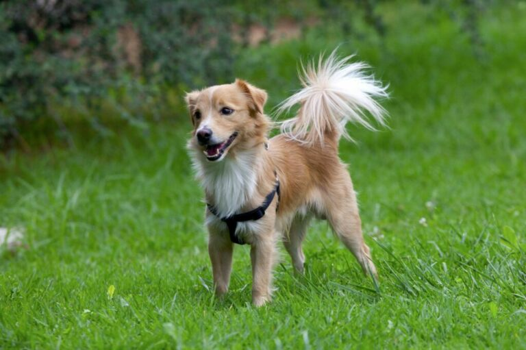
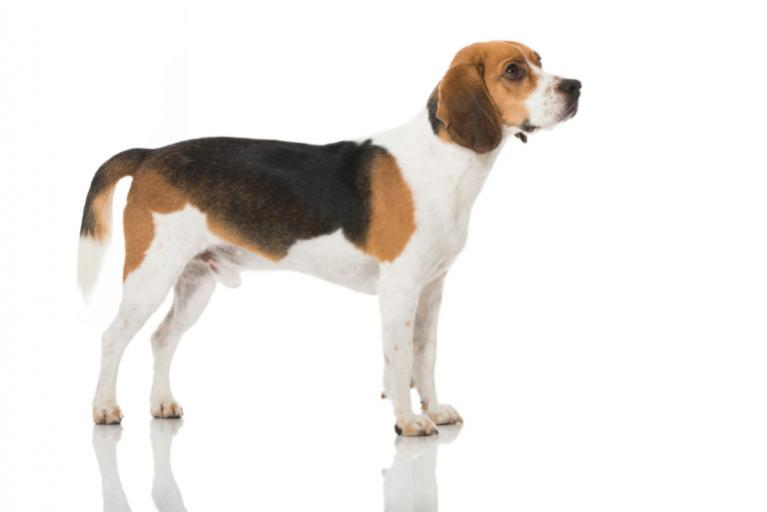
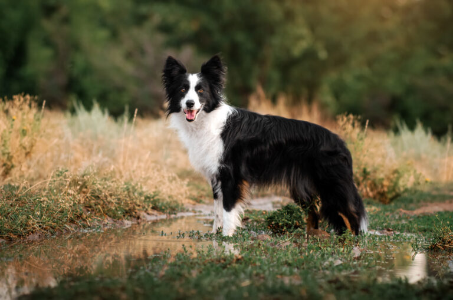
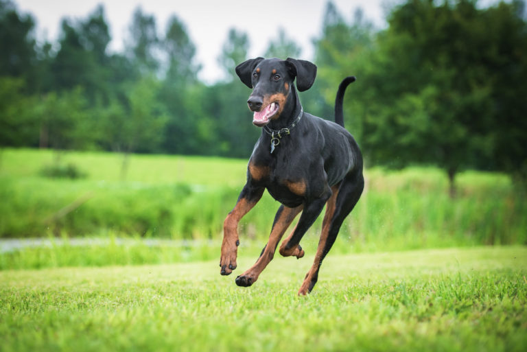
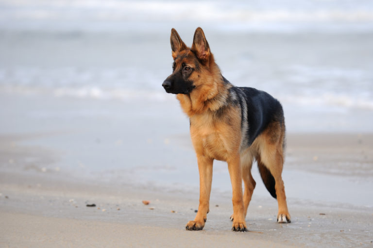
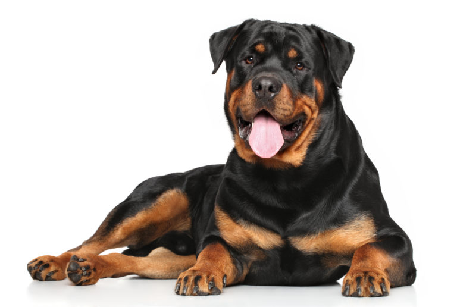
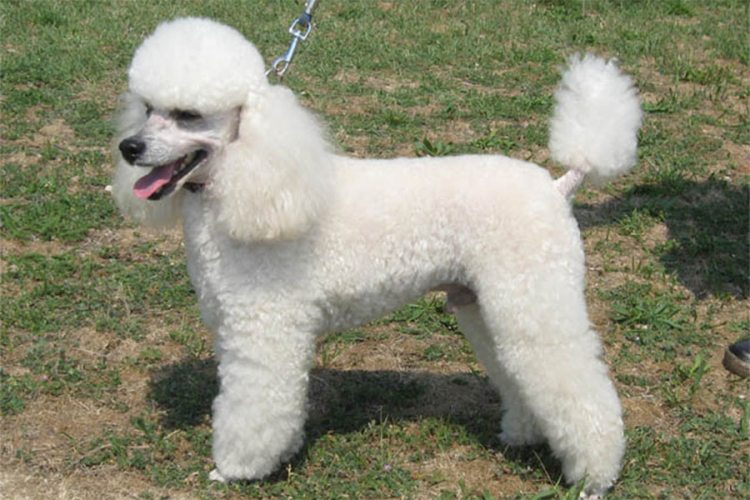

Galerija

Jednostavan , prilagođen ljudima i pouzdan: labrador retriver srednjeg rasta izuzetno je popularan kao obiteljski pas, ali izvornom radnom psu potreban je mentalni I fizički poticaj.

Alopekis je izuzetno šarmantan pas koji se pojavljuje u mnogim varijacijama krzna. Međutim, izvan rodne Grčke nije baš poznat.

Današnji bernardinac nema više mnogo toga zajedničkog sa svojim slavnim pretkom Barryjem koji je spasio živote preko 40 žrtava lavina.

Biglove kratke noge mogu vas zavarati – ova pasmina srednje veličine držat će vas aktivnim i uvijek je puna iznenađenja! Ovi su srdačni psi aktivni, hrabri i vrlo pametni.

Inteligentni i sofisticirani graničarski škotski ovčar, svima poznat kao Border Collie, sa srednje dugim ili kratkim krznom pravi je ovčar zato nije najbolji izbor za baš svaku obitelj.

Oštar pas za zaštitu ili prevelika maza? Oko pasmine doberman lome se koplja. Imidž opasne zvijeri može zahvaliti brojnim ulogama na velikom platnu. No, kultni je status osigurao ulogom u američkoj seriji „Magnum“.

Njemački ovčar je najrašireniji radni pas na svijetu, ali se zahvaljujući svom prijateljskom i znatiželjnom ponašanju uklapa odlično kao i obiteljski pas.

Gruba vanjština, meko srce: rotvajler je snažan, neustrašiv i samouvjeren pas koji, kao pas čuvar ili policijski pas, ponekad pokaže i zube kao upozorenje.

Elegantna, profinjena i uredno podšišana – no, pudlica je mnogo više od toga. U drami Faust Johanna Wolfganga Goethea vrag Mefisto pretvara se upravo u crnu pudlicu.